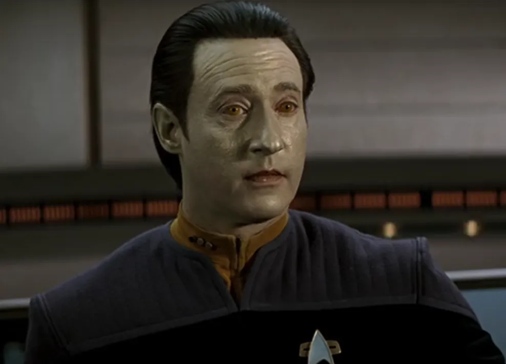
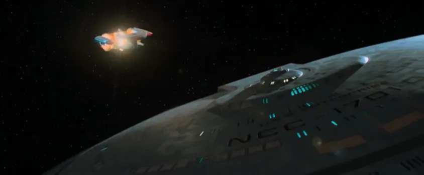
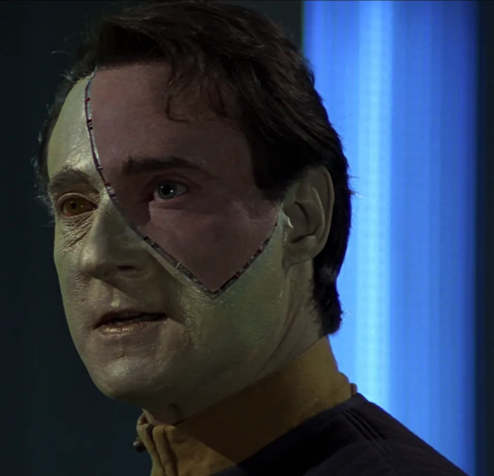
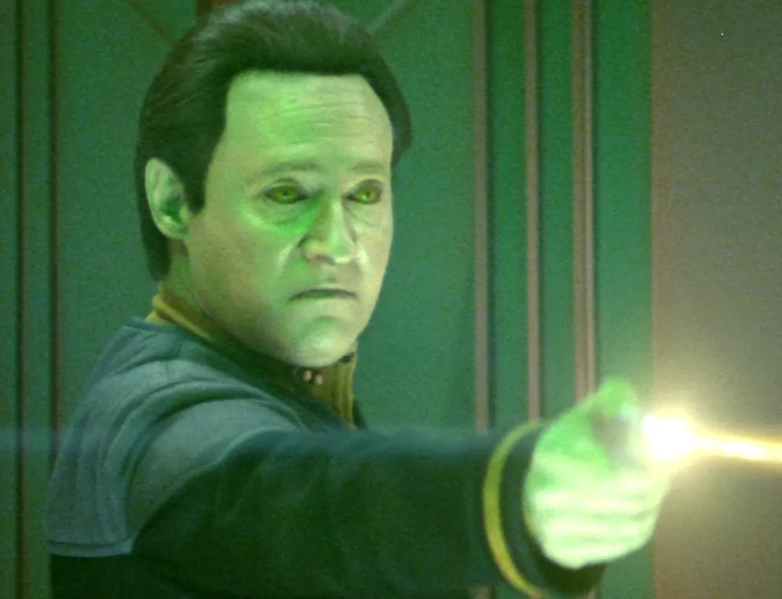
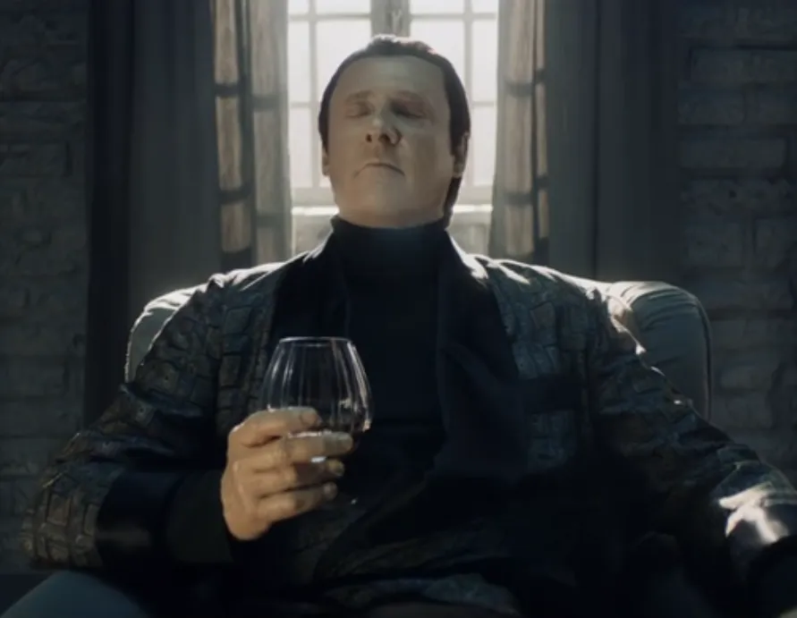

@c6reviews.
@c6reviews.| Data | |
|---|---|
 |
|
| Played by: | Brent Spiner |
| Primary Series: |  Seasons 1-7  Seasons 1 & 3 |
| Primary Films: |
Star Trek Generations Star Trek: First Contact Star Trek: Insurrection Star Trek Nemesis |
| Also appears in: |
LOW 5x07: Fully Dilated (alternate reality) |
“Childhood”
c. 2336
Data's construction completed
Dr. Noonien Soong completed construction of Data around 2336. Soong and his wife, Juliana, cared for Data's early existence, helping Data navigate motor control and sensory input as his neural nets formed. After some time, Soong decided to download the logs and journals of the Omicron Theta colonists into Data, while also wiping Data's memory of his earliest years.
Early Life
Data activated on Omicron Theta
After the Crystalline Entity destroyed all life on planet Omicron Theta, Data was found and reactivated by Starfleet officers from the USS Tripoli. He retained no memory of his earlier upbringing.View on comprehensive timeline ❱
Data admitted to Starfleet Academy
Because of his connection to the Starfleet officers who found him, Data chose to apply to Starfleet Academy. Data was accepted into the Academy despite Bruce Maddox being “the only member of the evaluation committee to oppose [Data's] entrance on the grounds that [he] was not a sentient being”.
Data graduates from the Academy, is assigned to the USS Trieste
Data graduated with honors in exobiology and probability mechanics. He was assigned to the USS Trieste where he spent three years as an ensign and twelve as a lieutenant.
Data promoted to lieutenant
Presumably, he was promoted to lieutenant j.g. and then later to a full lieutenant, but the exact dates are not known.
2349–2358
(10 years)
(10 years)
Data promoted to lieutenant commander
Service on the USS Enterprise‑D

Data visits the site of his own discovery on Omicron Theta
After being assigned to the USS Enterprise‑D earlier in the year as its second officer, he and the crew revisited the site on Omicron Theta where Data was first discovered. There, they found an underground lab with another android, disassembled, that looked just like Data.TNG 1x13: Datalore
Data's rights as an individual are litigated
Despite his distinguished career in Starfleet, Data's status as “person or property” is called into question when cyberneticist Bruce Maddox seeks to study Data's construction.TNG 2x09: The Measure of a Man

Data creates an android daughter
Following through on a desire to procreate, Data creates an android offspring named Lal, whose existence raises important moral and ethical concerns.TNG 3x16: The Offspring

Data meets his maker
When a recall program forces Data to return to his creator's lab, Data meets Dr. Noonien Soong and finally has the opportunity to get answers to his many questions.
TNG 4x03: Brothers
Data seeks out the Crystalline Entity
After the Crystalline Entity destroys the site of a future Federation colony, Data assists a specialist from the Omicron Theta colony to seek out the entity to better understand it.TNG 5x04: Silicon Avatar
Data unlocks a subroutine within him, allowing him to experience dreams
Data discovers a previously-locked subroutine left behind by his creator, Dr. Noonien Soong. It was Soong's wish that once Data reached a certain level of consciousness and autonomy that he would open his mind to experience dreams.TNG 6x16: Birthright, Part I
Data meets his “mother”
Data meets Dr. Noonien Soong's wife, Juliana Tainer, who helped to “raise” Data during his formative years.TNG 7x10: Inheritance


Spoiler » Destruction of the Enterprise
The Enterprise embarks on a mission to stop Tolian Soran from destroying a star. A conflict with the Duras sisters during these events would lead to the destruction of the Enterprise‑D.


Data captured by the Borg Queen
After going back in time with the Enterprise‑E to stop the Borg from assimilating humanity, Data is captured by the Borg Queen and partially made to look more human.

Mission to the Briar Patch
Data's ethical subroutines take over when he discovered a plot by the Federation and the Son'a to relocate a peaceful race known as the Ba'ku.


Spoiler » Battle with the Scimitar
During a mission to Romulus to investigate a major change of political power, the Enterprise is confronted by a warship called the Scimitar, under the command of Shinzon. During their protracted battle with the Scimitar, Data makes the ultimate sacrifice to save Picard and destroy Shinzon's weapon of mass destruction.
c. 2386
Altan Soong & Bruce Maddox create the Coppelius androids
In or around this year, using a method called fractal neuronic cloning, Noonien Soong's son creates several new androids – offspring of Data – with one of Data's positronic neurons.

Star Trek: Picard Season 1 Spoiler »
Data's consciousness encounters Picard in a complex quantum simulation
A version of Data's consciousness existed based on Data's memories that were uploaded to the B-4 android, which were revived in a quantum simulation by Soong's neuronic cloning process. While Picard's memories were being uploaded to Soong's golem, Data's consciousness was able to interact with that of Picard's within the simulation. This version of Data made one last request of his long-time friend: to terminate his consciousness so that he could appreciate the finite nature of Human life. After leaving the simulation, Picard complied with Data's request.Data's consciousness encounters Picard in a complex quantum simulation
PIC 1x10: Et in Arcadia Ego, Part 2
Star Trek: Picard Season 3 Spoiler »
Altan Soong constructs a new android combining parts of B-4, Lore, Lal, and Data
With the lifting of the ban on synths, Altan Soong continued his life's work by creating a new android, combining the memories and personalities of several of its predecessors. Soong died before completing his project, and his android was seized by Section 31 and made to serve as an AI security system at Daystrom Station.Altan Soong constructs a new android combining parts of B-4, Lore, Lal, and Data
Star Trek: Picard Season 3
Star Trek: Picard Season 3 Spoiler »
Data triumphs over Lore in an internal battle for control of the android body
After being rescued from Daystrom Station, the new Soong android was unstable, with the Data and Lore personalities at odds with each other. After a struggle for dominance, Data was the victor. This “new” Data now had a more-human personality, influenced by Lore's memories, and he went on to play a crucial role in the Enterprise‑D's victory over one final Borg threat against the Federation.Data triumphs over Lore in an internal battle for control of the android body
Star Trek: Picard Season 3